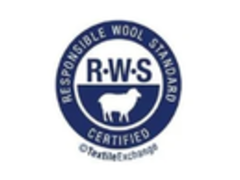

OEKO-TEX STANDARD 100
Every component of the finished fabric tested against the limit values for harmful substances.
Certificate22.HCN.48110 · Hohenstein HTTI
A certification logo on a website is not evidence. Below is every standard RyderTex holds, with the certificate reference where we have it on file, so your compliance team can verify rather than take our word for it.

Every component of the finished fabric tested against the limit values for harmful substances.

Chain-of-custody verification for recycled content, plus social and environmental criteria at each processing stage.

Tracks recycled input through the supply chain where the full GRS criteria do not apply.

Cotton sourced through the Better Cotton programme for farm-level water, soil and labour practice.

Responsible forestry for the wood-pulp cellulosics behind modal and rayon.

Licensed to knit and finish TENCEL™ branded lyocell and modal fibre.

Audited and approved to supply the Inditex group, including Oysho.

Chain-of-custody and animal-welfare criteria for wool content, from farm to finished fabric.
GRS and RCS are chain-of-custody claims — they only hold if the recycled content is real from the first spool. RyderTex specifies and sources yarn to a written programme, including recycled and biodegradable series.
Sourced and specified, not spun in-house — see the full yarn programme on Capabilities.
Recycled content claims are traceable under GRS and RCS. Finished fabric is tested for harmful substances under OEKO-TEX STANDARD 100. Cotton sourcing runs through BCI, cellulosics through FSC-certified and TENCEL™ licensed supply, wool through RWS. RyderTex is an approved Inditex supplier.